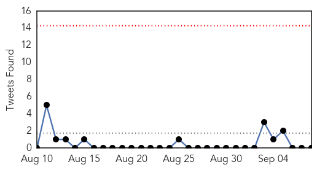
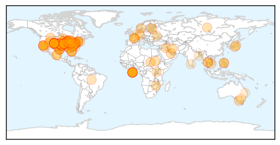
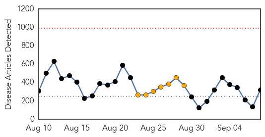
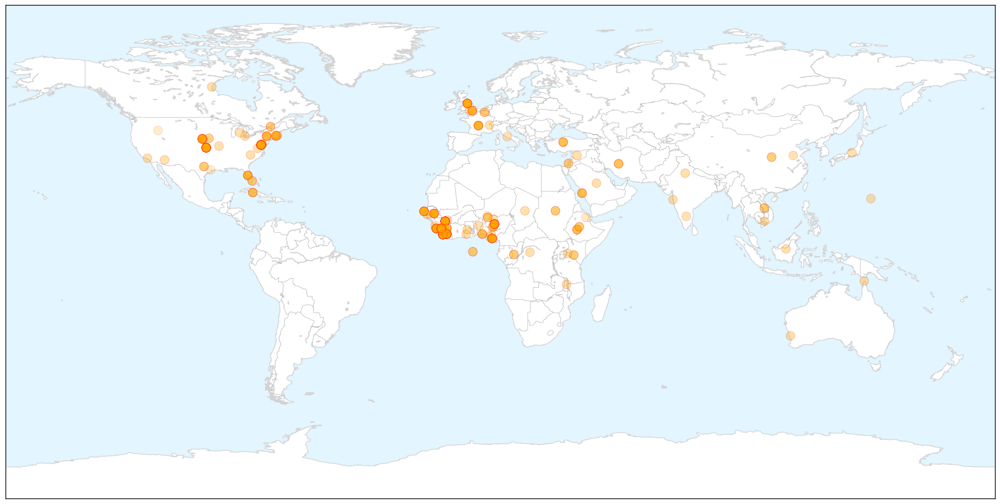

Unknown
30-Day Web Trend
2 alerts, 0 warnings

30-Day Twitter Trend
0 alerts, 0 warnings

Article Locations

Article Confidences
Top Articles:
- 0.999
- No virus in Florida — yet; hundreds sick in Midwest
- 0.999
- Health officials monitor respiratory virus in Iowa
- 0.998
- What you need to know about enterovirus cases in Iowa
- 0.997
- Minnesota on alert for virus that has sickened children elsewhere
- 0.996
- Respiratory virus with no known treatment or vaccine spreading across Midwest
- 0.996
- 'Unusually severe' respiratory virus outbreak suspected in Lowcountry
- 0.996
- Respiratory virus with no known treatment or vaccine spreading across Midwest
- 0.996
- Respiratory Virus Striking Thousands Of Kids Across 10 States, Sending Them To ICUs (VIDEO)
- 0.996
- Respiratory virus with no known treatment or vaccine spreading across Midwest
- 0.995
- CDC warns of fast-spreading virus that has hit kids in Midwest (w/ video)
- 0.995
- ‘Uncommon’ virus affecting hundreds of children in US
- 0.995
- Respiratory Virus Hitting Kids in at Least 12 States
- 0.994
- Respiratory illness now affects Virginia children. WDBJ7 talks with Health Department
- 0.994
- Nasty virus affecting hundreds of area children
- 0.994
- Serious respiratory illness hits hundreds of kids across
- 0.994
- Serious respiratory virus hits hundreds of children, but no enterovirus cases confirmed in Michigan
- 0.994
- Pestilent Virus Strikes Thousands of Kids across US
- 0.993
- Mysterious respiratory virus leaves hundreds of US kids hospitalized
- 0.993
- Virus with no known treatment or vaccine affecting US children across Midwest
- 0.992
- CDC confirms respiratory illness sickening children
- 0.992
- Hundreds Of US Children Treated For Respiratory Virus
- 0.992
- Illinois one of 10 states to see spike in respiratory virus among children
- 0.991
- Rare Respiratory Virus Sickens Children In Illinois « CBS Chicago
- 0.990
- Rare respiratory virus found in 11 children in Chicago
- 0.990
- CDC investigating cases of respiratory illness in Alabama; testing to determine if it is virus that has sickened thousands
- 0.990
- Serious respiratory illness hits dozen US states
- 0.989
- Respiratory Virus Hitting Kids in at Least 12 States
- 0.988
- No cases of respiratory illness, hospitals ready
- 0.987
- Unknown Virus Causing Severe Respiratory Illness Among Children In Midwest
- 0.987
- Rare respiratory illness sends hundreds of kids in U.S. to hospital
- 0.986
- Rare Respiratory Virus Targets Children in Severe Outbreak Across US
- 0.985
- Severe respiratory virus afflicting children confirmed in at least six states, as others investigate possible cases
- 0.985
- Respiratory Virus Infecting Children Across Midwest
- 0.985
- Health officials monitor respiratory virus in Iowa, Illinois
- 0.984
- Mystery respiratory virus likely to hit kids across country
- 0.984
- Respiratory virus sickens hundreds of kids across 10 states in Midwest
- 0.982
- Serious respiratory illness hits hundreds of kids
- 0.981
- Health officials monitor respiratory virus in Iowa
- 0.980
- Health Officials Say No Cases of Enterovirus 68 in Kanawha and Putnam Counties
- 0.980
- Respiratory Virus Sends Hundreds of Children to Hospital
- 0.979
- Virus hospitalizes hundreds of kids in Midwest and South
- 0.979
- Doctors Monitor Spread of Mystery Illness
- 0.979
- Illinois Department of Public Health monitoring enterovirus « The Metro Independent
- 0.977
- Is the rare Enterovirus why hundreds of kids are sick nationwide?
- 0.977
- Children heading back to school face virus outbreak in Midwest
- 0.977
- Enterovirus D68: Mystery virus sweeps across the U.S.
- 0.977
- Virus Hitting Kids in Midwest Is Spreading to Other States
- 0.976
- Iowa becomes third state with confirmed cases of severe respiratory illness, joining Missouri and Illinois
- 0.975
- Officials say respiratory virus outbreak in Ohio will spread as kids head back-to-school
- 0.975
- Officials watching respiratory outbreak
Showing top 50 articles...
Top Tweets:
-
No tweets found for Sep 08, 2014
Ebola
30-Day Web Trend
0 alerts, 7 warnings

30-Day Twitter Trend
0 alerts, 0 warnings

Article Locations

X

Article Confidences
Top Articles:
- 1.000
- Ebola spreads exponentially in Liberia, many more cases soon: WHO
- 1.000
- Another U.S. Missionary Doctor Contracts Ebola in Liberia
- 1.000
- WHO Expects Liberia's Ebola Caseload Will Surge
- 1.000
- Ebola Resurgence in Guinea, Liberia Highlights West Africa's Containment Concerns
- 1.000
- Ebola outbreak is a unique 'perfect storm'
- 1.000
- Preventing Ebola in Workplaces, Articles
- 1.000
- Ebola: health fears stop British journalist from hosting awards
- 1.000
- Ebola is surging in places it had been beaten back
- 1.000
- Ebola making a comeback in places it was contained
- 1.000
- Is Ebola outbreak hysteria drawing attention away from diseases that kill more people?
- 1.000
- Africans fight against pandemics
- 1.000
- Ebola map shows people in more African regions risk infection from animals
- 1.000
- Ebola spreads exponentially in Liberia, many more cases soon: WHO
- 1.000
- UPDATE 1-Ebola map shows people in more African regions risk infection from animals
- 1.000
- Ebola spreading rapidly in Liberia
- 1.000
- Latest U.S. Ebola Patient Getting Better, Doctors Report
- 1.000
- ‘Many thousands of new cases’ of Ebola expected in Liberia
- 1.000
- the edge of knowledge
- 1.000
- Ebola is surging in places it had been beaten back
- 1.000
- US and UK to send military personnel to help West Africa tackle Ebola outbreak
- 1.000
- US and UK to send military personnel to help West Africa tackle Ebola outbreak
- 1.000
- US and UK to send military personnel to help West Africa tackle Ebola outbreak
- 1.000
- Ebola spreads exponentially in Liberia
- 1.000
- Ebola Outbreak Attributed to Economic Underdevelopment, Political Crises
- 1.000
- U.S., Britain to send troops to help fight Ebola in West Africa
- 1.000
- JABSOM research examines Ebola relative
- 1.000
- Liberia to see thousands of new cases as Ebola spreads 'exponentially'
- 1.000
- WHO Predicts Thousands Of New Ebola Cases In Liberia
- 1.000
- Sierra Leone lockdown won't contain Ebola
- 1.000
- Ebola is surging in places it had been beaten back
- 1.000
- US and UK to send military personnel to help West Africa tackle Ebola outbreak
- 1.000
- Liberia and Sierra Leone update Ebola case counts
- 1.000
- Ebola is Surging in Places it Had Been Beaten Back
- 1.000
- Ebola is surging in places it had been beaten back
- 1.000
- U.S., Britain to send military help in battle against Ebola
- 1.000
- Ebola virus is surging in places where it was beaten back: experts
- 1.000
- The most from the coast
- 1.000
- Liberia's grim Ebola situation prompts call for 'nonconventional' help
- 1.000
- Liberia 'Faces Huge Surge' Says WHO
- 1.000
- Ebola is surging in places it had been beaten back
- 1.000
- Ebola crisis: Liberia 'faces huge surge' says WHO
- 1.000
- US and UK to send military personnel to help West Africa tackle Ebola outbreak
- 1.000
- Ebola is surging in places it had been beaten back
- 1.000
- Ebola spreads exponentially in Liberia, many more cases soon: WHO
- 1.000
- Ebola is surging in places it had been beaten back
- 1.000
- WHO: Liberia will see thousands of new Ebola cases
- 1.000
- Ebola spreads exponentially in Liberia, many more cases soon-WHO
- 1.000
- WHO: Liberia will see thousands of new Ebola cases
- 1.000
- Ebola Spreading, Many More Cases Soon - WHO
- 1.000
- AU warns efforts to stop Ebola are stigmatizing
Showing top 50 articles...
Top Tweets:
- 0.864
- RT: Studies that have detected Ebola virus using only immunofluorescent techniques "totally unreliable" h/t http://…
- 0.657
- Early Epidemic Dynamics of the West African 2014 Ebola Outbreak: Estimates Derived with a Simple Two-Parameter Model http://t.co/DYVtZPpRMe